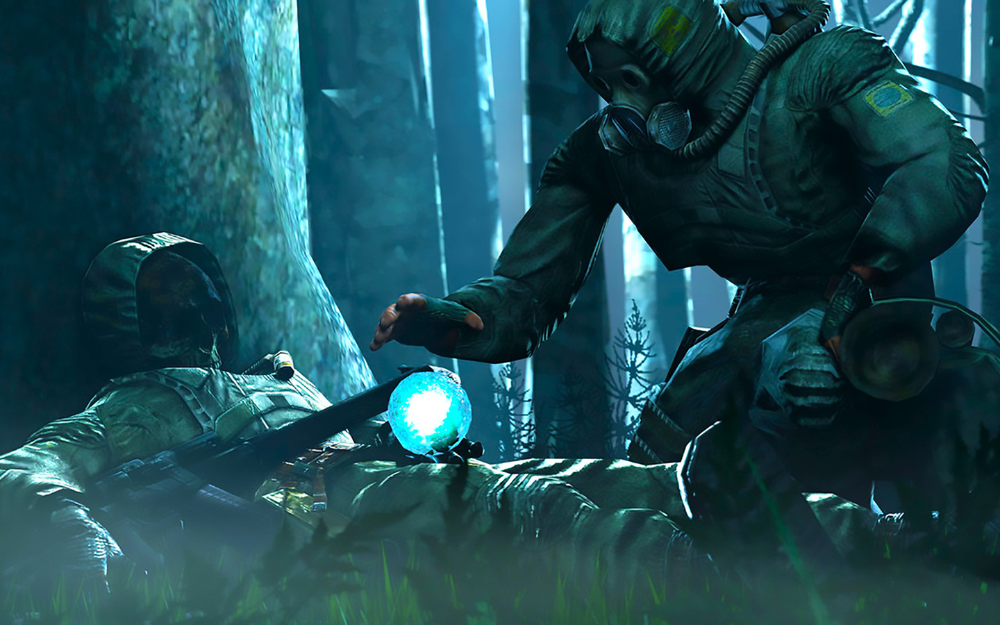
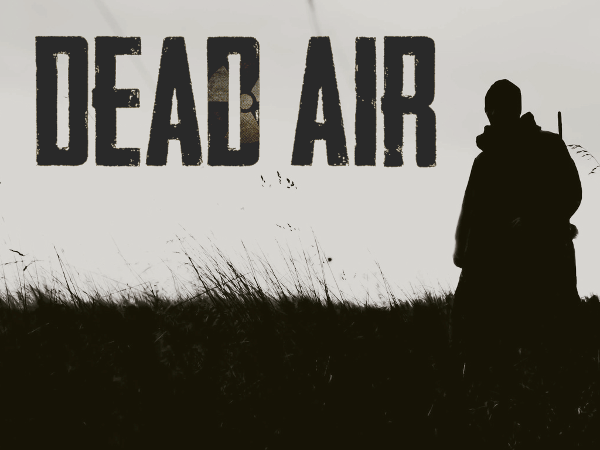
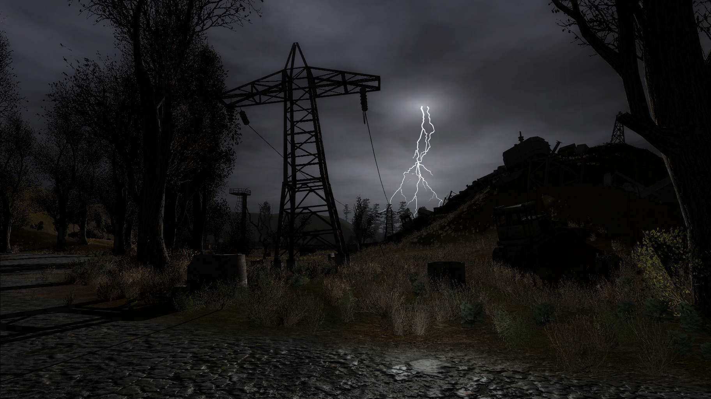

Stalker Anomaly 1.5.0 представлена как глобальный проект, построенный на платформе мода Last Day 1.3 с дополнительными адонами расширяющими геймлей игры. Новая версия Anomaly 1.5.0 готова представить игрокам одновременное прохождение трех сюжетных линий, множество квестов и новых персонажей. В дополнение к геймплейным нововведениям и измененной графической оболочки, в игру был введен ряд новых игровых систем - война группировок, крафт предметов и получения артефактов, система маскировки и использование ремонтных комплектов для создания новых предметов многоразового использования.

Anomaly 1.5.0 beta
Этот мод представит вам потрясающюю оптимизацию графики и интересный геймплей.
Адаптация модификации «Misery» на платформу «Call of Chernobyl» оказалась удачным опытом, как для игроков, так и для самих разработчиков. Авторы «Call of Misery» не только перенесли ключевые геймплейные особенности на просторный и фриплейный игровой мир, но и позаботились о добавлении в игру своих собственных наработок. Но все это было только началом работы.

Dead Air
Этот мод привносит особый хардкорбб а также фриплей.
Stalker Anomaly 1.5.0 представлена как глобальный проект, построенный на платформе мода Last Day 1.3 с дополнительными адонами расширяющими геймлей игры. Новая версия Anomaly 1.5.0 готова представить игрокам одновременное прохождение трех сюжетных линий, множество квестов и новых персонажей. В дополнение к геймплейным нововведениям и измененной графической оболочки, в игру был введен ряд новых игровых систем - война группировок, крафт предметов и получения артефактов, система маскировки и использование ремонтных комплектов для создания новых предметов многоразового использования.

Call of Chernobyl
Этот мод добавляет множество фриплейных идей и дает возможность подстроить их под себя.